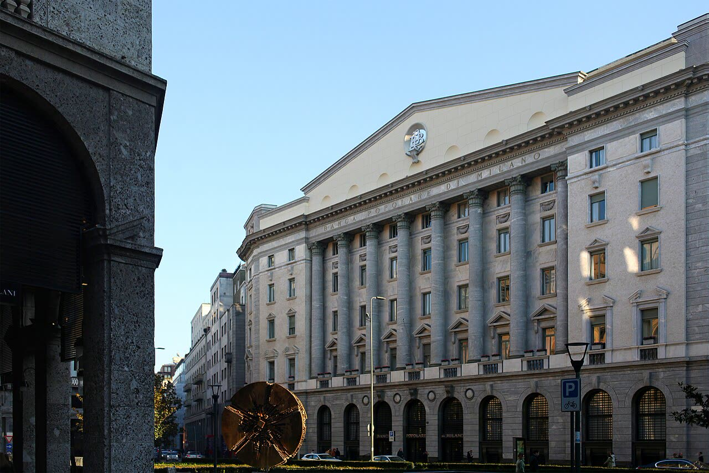

Crédit Agricole propone a Banco Bpm la fusione, con 1 miliardo di dividendo
Decidano i soci di Banco Bpm: il governo può fissare condizioni con il golden power, non scegliere i padroni delle banche.
Redazione Contrappunto · aggiornato il 09.11.2026


Banco Bpm è una banca quotata a Milano, erede della Banca Popolare di Milano; il primo azionista è la banca francese Crédit Agricole, con il 29,6%. Lunedì 9 novembre Crédit Agricole ha proposto al consiglio di amministrazione di Banco Bpm di avviare le trattative per fondere Banco Bpm con le proprie attività italiane (Crédit Agricole Italia). Non è un'offerta pubblica di acquisto (Opa): sarebbe una fusione, che i soci devono approvare. Conta per i clienti delle banche coinvolte, per gli azionisti e per la partita politica sul controllo delle banche italiane.
Vedi di più: 5 parole spiegate, cosa si racconta
Cosa si raccontaDomani, Open, il Fatto Quotidiano e il Foglio riportano le cifre diffuse da Crédit Agricole: proposta «amichevole», nuova banca quotata a Milano e guidata da Giuseppe Castagna, premio del 20% per i soci di Banco Bpm, dividendo straordinario di 1 miliardo, quota francese dal 29,6% a circa il 45%. Il Fatto vede nella fusione il «passaggio definitivo di Milano sotto i francesi»; il Foglio la presenta come una prova per il ministro dell'Economia Giancarlo Giorgetti, che puntava a un terzo polo attorno al Monte dei Paschi. [Domani] [Open] [Il Fatto Quotidiano] [Il Foglio]
- Fusione e Opa
- Nella fusione le due società si uniscono e i soci ricevono azioni della nuova; l'Opa (offerta pubblica di acquisto) è l'offerta rivolta a tutti i soci di comprare le loro azioni. Chi supera una certa quota deve in genere lanciarla (Open, Domani).
- Whitewash
- Meccanismo che esenta Crédit Agricole dall'obbligo di Opa se l'assemblea straordinaria di Banco Bpm approva con almeno due terzi del capitale presente e senza il voto contrario della maggioranza dei soci diversi da Crédit Agricole e da chi ha più del 10% (Mediobanca, citata da Open).
- Golden power
- Poteri speciali del governo italiano su operazioni che coinvolgono attività considerate strategiche: può vietarle o imporre condizioni (Open).
- Anima
- Società di gestione del risparmio controllata da Banco Bpm; il suo ruolo nella banca unita andrà verificato nell'esame del golden power (Equita, citata da Open; il Fatto).
- Utile per azione (Eps)
- L'utile della banca diviso per il numero di azioni: Crédit Agricole stima per Banco Bpm +24% nel 2027 (Open, Domani).
- Crédit Agricole propone a Banco Bpm di fondersi con le sue attività italiane: premio del 20% e dividendo straordinario da 1 miliardo per i soci, senza Opa; la quota francese salirebbe a circa il 45%.
- Servono il voto dell'assemblea di Banco Bpm, l'autorizzazione della Bce e l'esame del golden power del governo; chiusura possibile nella seconda metà del 2027.
Domani, Fatto, Open e Foglio riportano le cifre di Crédit Agricole: premio del 20%, dividendo da 1 miliardo. Il Fatto parla di «passaggio definitivo di Milano sotto i francesi», il Foglio di «sfida a Giorgetti». Nessuna dice cosa cambia per i clienti; il premio è un calcolo dei francesi. Quindi? Decidono i soci di Banco Bpm, ed è giusto: per Open servono due terzi del capitale presente e, in più, nessun voto contrario della maggioranza degli altri soci, esclusi Crédit Agricole e chi ha oltre il 10%. Il golden power può imporre condizioni, non scegliere chi possiede una banca: con UniCredit il governo lo ha usato (ANSA) e non va rifatto. [1] [3] [2] [4] [5]
La verifica punto per punto3 passaggi, 6 fonti
Qui sotto ogni cosa scritta sopra, una per una, con le fonti. Confermato: lo dice un documento originale o più fonti lette. Plausibile: lo riportano fonti serie, ma non abbiamo letto l'originale. Discordante: le fonti danno numeri diversi, e diciamo quali. Ipotesi e Opinione sono il nostro ragionamento, separato dai fatti.
Cosa propone Crédit Agricole
Crédit Agricole ha proposto a Banco Bpm di avviare trattative per fondere la banca con le sue attività italiane; la proposta, definita «amichevole» dal gruppo francese, è stata sottoposta al consiglio di amministrazione di Banco Bpm (Domani, Open, il Fatto). La nuova banca resterebbe quotata a Milano, avrebbe 6,5 milioni di clienti e oltre 2.300 filiali e sarebbe guidata dall'attuale amministratore delegato Giuseppe Castagna (Domani, il Fatto). Crédit Agricole, ora al 29,6%, salirebbe a circa il 45% (Domani, Open, Foglio). Secondo i calcoli di Crédit Agricole, il cambio azioni incorpora un premio del 20%, c'è un dividendo straordinario di 1 miliardo e le sinergie valgono 800 milioni l'anno, con un utile per azione di Banco Bpm in crescita di circa il 24% nel 2027 (Domani, Open); Intermonte stima che gli effetti arrivino solo dal 2028 (Open). Servono il voto dell'assemblea straordinaria con il whitewash, l'autorizzazione della Bce e il golden power; chiusura possibile nella seconda metà del 2027 (Domani, Open). Il 29 ottobre i soci di Mps avevano bocciato l'operazione su Banco Bpm (Domani, Foglio). Su UniCredit, che aveva lanciato un'offerta su Banco Bpm poi ritirata anche a seguito del golden power, Andrea Orcel dice oggi: «Abbiamo cambiato completamente rotta» (ANSA). Nel settembre 2025 Giorgetti disse di non avere «obiezioni politiche ma una legge da far rispettare» (Foglio).
Per i clienti, filiali e costi
Per i clienti il cambiamento più probabile riguarda le filiali e i servizi, non i conti: con 800 milioni di sinergie l'anno la nuova banca dovrà ridurre costi dove le reti si sovrappongono.
Ragionamento: A favore: le sinergie dichiarate sono risparmi di costo e Crédit Agricole Italia e Banco Bpm hanno reti separate (Domani, Open). Contro: nessuna delle testate lette dice dove, quante filiali o quanti posti; non abbiamo letto il comunicato originale né un piano. Quanto ai soci: premio e dividendo sono calcoli di Crédit Agricole e il prezzo di riferimento non è nelle pagine lette; Equita parla di proposta «attraente» solo a prima lettura. Fiducia media.
Il nostro punto
Giudichiamo la fusione sui numeri, non sulla bandiera: se il premio è vero e il prezzo è giusto, a decidere devono essere i soci di Banco Bpm, con il voto che il whitewash prevede. Il golden power è uno strumento per la sicurezza nazionale e per i servizi essenziali: può imporre condizioni mirate, per esempio su Anima, non scegliere il padrone di una banca per ragioni di «italianità». Lo ha già fatto con UniCredit e Bruxelles lo ha criticato; farlo al contrario, per favorire il terzo polo del Tesoro, sarebbe lo stesso errore. Più concorrenza sul credito serve ai clienti: la domanda per Castagna e per Crédit Agricole è quali sportelli e quali costi cambiano.
Fonti6, tutte con il link
- Credit Agricole propone la fusione con Banco Bpm (9 novembre 2026) (Domani) · consultata il 09.11.2026
- L'offerta di Crédit Agricole a Bpm (9 novembre 2026) (Open) · consultata il 09.11.2026
- I francesi scoprono le carte: Credit Agricole prepara la fusione delle sue attività italiane con il Banco Bpm (9 novembre 2026) (Il Fatto Quotidiano) · consultata il 09.11.2026
- Mossa su Bpm. Parigi disegna il terzo polo. La sfida a Giorgetti (9 novembre 2026) (Il Foglio) · consultata il 09.11.2026
- Orcel, dopo Bpm in Italia cambiato rotta, piano crescita organica (9 novembre 2026) (ANSA) · consultata il 09.11.2026
- Giorgetti sul caso Crédit Agricole-Bpm: «La legge sul golden power vale per tutti» (24 settembre 2025) (Il Foglio) · consultata il 09.11.2026
Testo preparato con strumenti di intelligenza artificiale e pubblicato senza revisione umana. Come lavoriamo